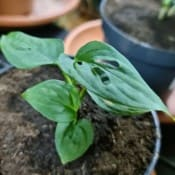
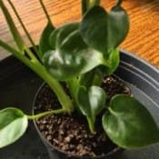

Nom
Exposition en été
Exposition en hiver
Arrosage en été
Arrosage en hiver
Rempotage
Monstera adansoniiVoir la galerie photo

Je la place dans un endroit lumineux en évitant qu'elle ne reçoive de soleil direct ou indirect.
Si dehors, je la rentre lorsque les nuits ont une température qui passe sous les 15°C.
Je le place ou il aura une bonne luminosité pas trop loin d'une fenêtre dans une pièce ou la température ne descendra pas sous les 15°C.
Je fais moins attention au soleil car celui d'hiver est sans danger.
Je l'arrose de manière régulière afin que le substrat ne sèche pas trop.
Soit par bassinage ou de manière abondante.
La chaleur fera sécher assez rapidement la motte en évitant le rique de moisissures.
Je diminue les fréquences d'arrosage en veillant juste à ce que le substrat ne soit pas trop sec.
Je fais un mélange avec du terreau normal pour plantes d'intérieur auquel je rajoute un peu de fibre de coco.
Je la garde dans un pot en plastique de taille moyenne. Mais, il est possible que je la mette en suspension lors du prochain rempotage ou en grimpante, je verrai bien.
Nom
Exposition en été
Exposition en hiver
Arrosage en été
Arrosage en hiver
Rempotage
Monstera deliciosaVoir la galerie photo

Je la place dans un endroit lumineux en évitant qu'elle ne reçoive de soleil direct ou indirect.
En intérieur, il lui arrive de recevoir du soleil au travers d'un voilage.
Si dehors, je la rentre lorsque les nuits ont une température qui passe sous les 15°C.
Je le place ou il aura une bonne luminosité pas trop loin d'une fenêtre dans une pièce ou la température ne descendra pas sous les 15°C.
Je fais moins attention au soleil car celui d'hiver est sans danger.
Je l'arrose de manière régulière afin que le substrat ne sèche pas trop.
Soit par bassinage ou de manière abondante.
La chaleur fera sécher assez rapidement la motte en évitant le rique de moisissures.
Je diminue les fréquences d'arrosage en veillant juste à ce que le substrat ne soit pas trop sec.
Je fais un mélange avec du terreau normal pour plantes d'intérieur auquel je rajoute un peu de fibre de coco.
Je la garde dans un pot en plastique de taille moyenne. Mais, je la mettrai en grimpante lors du prochain rempotage.